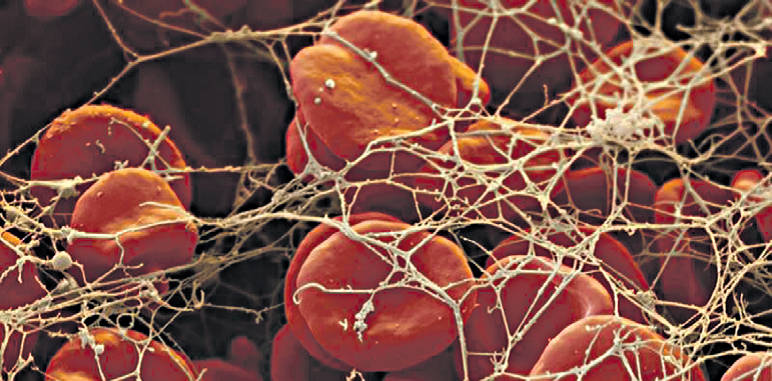

«Чем больше наука делает открытий
в физическом мире, тем больше мы
приходим к выводам, которые
можно разрушить только Верой».
Человечество не имеет права отказываться от мысли о целесообразности всего существующего на Планете, и особенно человека - как примера Великого порядка, поэтому главной целью, по словам Кеплера, всех исследований внешнего мира должно быть открытие рациональности Высшего порядка, или Гармонии, которую Бог ниспослал людям! Великая Гармония Солнечной системы была создана Высшим Космическим Разумом для реализации Вселенской Программы Преображения Пространства и человека как Вели -кого подобия Бога, о чём говорят все религии мира, он является непосредственным участником и исполнителем этой Программы, вобрав в себя всё СОВЕРШЕНСТВО Мироздания!
Исторический опыт
И если это так, тогда присутствие человека в Пространстве КОСМОСА должно характеризоваться ЕДИНЫМИ с Пространством законами Природы, включая законы термодинамики, и условиями «Золотого сечения», определяемого во многих науках как оптимальное соотношение ключевых параметров Природы. Золотая пропорция, или Золотое сечение в числах была открыта ещё в XII Леонардо Пизанским, больше известным в кругах математиков и физиков как Фибоначчи! Необходимо помнить, что физическими законами, дарованными людям Высшим Космическим Разумом, может быть описана внутренняя Природа и самого человека, тоже как часть Целого, и важнейшими из них должны считаться, как Я сказал, законы термодинамики, где Первый закон является законом сохранения энергии, определяющим возникновение человека, которая не может возникнуть само по себе из ничего и без помощи Создателя, а Второй закон говорит о самопроизвольном росте энтропии, если человек нарушает Каноны мироздания! Энтони Флю пришёл к фундаментальному выводу о том, что возникновение жизни требует поистине невероятного сочетания множества разных факторов, а это приводит к выводу об участии во всём этом того, Кто способен творить!
За последние десятилетия учёные-биохимики, раскрывая ТАЙНУ человеческой клетки, пришли к единому выводу, что это совершенство Природы – человеческая клетка - может быть создана только как результат Высшего Творения!
Совершенная клетка
Отталкиваясь от клетки как от Высшего ЕДИНИЧНОГО фрактального подобия Мира Разума, можно с уверенностью сказать, что учёные, а за ними и всё человечество, обязательно придут к пониманию Божественного происхождения всего сущего на Планете!
Мы не отвергаем ведущую роль Разума человека, ибо мозг уникален, перерабатывая более миллиона единиц информации в каждую секунду, одновременно оценивая её важность и позволяя человеку оперировать наиболее значимой для него в данный момент информацией.
Исходя из этого, целью Холдинга НИИ «Здоровьесберегающие технологий» является изучение поведения отдельной клетки как части всего организма человека, способной принимать решения в экстремальных условиях, моделирующих наступление смерти человека, или обнуление энергии! В процессе постановочных экспериментов нами исследовалась кровь в объёме всего 0,01 мл, собираемая по технологии сбора крови при экспресс анализе на сахарный диабет, как у здоровых (по показаниям классической медицины) людей, так и у людей с различными заболеваниями, не выделяя их по возрастам и группам крови!
МЕЖДУ ВОЗРАСТОМ
И ЗДОРОВЬЕМ
Отступление от правил проведения фундаментальных исследований делалось преднамеренно для того, чтобы понять принципиальную возможность такого анализа, который, по нашему мнению, позволял бы открыть перспективы экспресс-профилактики, подтверждающей слова Н.И. Пирогова о том, Медицина Будущего есть сплошная профилактика!
Каждая клетка человека несёт свою неповторимую функцию.
Преображение мозга
Необходимо помнить, что мозг человека может принять более 250 000 информационных каналов одновременно в веерном режиме, преобразуя их в изображение и звук; целостность картины зависит от мощности, СОВЕРШЕННОСТИ Со-Знания человека и от способности спокойно, а значит, МУДРО воспринимать каждую новую информацию! При анализе человеческих клеток на «выживание» мы исходили ещё из того, что творческие личности имеют дивергентное мышление, то есть мышление, при котором просыпаются нативные формы видения и ориентации в многомерном Пространстве!
С учётом того, что человек принимается нами как открытая энергоинформационная система, связанная через мозги клеточный монолит с Космосом, отмечаем, что ни однобелково-нуклеиновое тело без СОЗНАТЕЛЬНОЙ КЛЕТОЧНОЙ АДАПТАЦИИ не выдержало бы тех кардинальных МЕГАпреображений, которые обрушились на Планету в последние десятилетия! В энергетическом плане человек – это природная пирамида со своими магнитными и торсионными полями, однако их интенсивность во многом зависит от Сознания самого человека и они могут быть урезаны или уменьшены страхом, тогда человек убивает сам себя, ибо затвердевание, или закупорка кровеносных сосудов происходит исключительно по воле человека и с его ведома!
Исследования показали, что вибрационная информация передаётся в организм человека из Космоса, как основа личного вознесения, как основа совершенствования в Духе, как гарантия отличного здоровья и основа долголетия! Уже хорошо известно, что у каждого человека имеется свой канал связи с Космосом под названием интуиция, и чем больше работает мозг, тем мощнее энергию он производит, укрепляя клетки и, в конечном счёте, укрепляя здоровье самого человека, поэтому люди искусства, люди творческих профессий являются потенциальными долгожителями!
Результаты ради жизни
Изучение полученных нами многочисленных данных говорит о том, что процесс перехода человека от жизни к смерти не так однозначен, как казалось многим исследователям, ибо человек, как органическая часть многомерного Пространства, настолько сильно информационно связан с Космосом, что прерывание жизненного цикла или этапа Вечной жизни во многом обусловлено, как ни странно это может прозвучать для обычного обывателя, исполнением тех задач, которые были предопределены для каждого из нас в момент зачатия!
Более того, неисполнение даже части предначертанных задач по самосовершенствованию (так называемые КАРМИЧЕСКИЕ долги) человеческой Сущности приводит к проявлению собственных НЕСОВЕРШЕНСТВ (болезней) ещё при зачатии (на графике отмечено буквой «К») и, соответственно, при рождении, сокращая срок жизни человека, в зависимости от глубины искажения и наказания! Данные показывают, что нет и не может быть единой зависимости между возрастом человека и датой его ухода из жизни! Нами выделен этап абсолютного здоровья, связанный с накоплением информации и формированием совершенного Сознания, и этап, подчиняющийся второму закону термодинамики, характеризующийся началом развития энтропии, а значит, началом ухудшением здоровья! Нами обнаружен этап и резкого перехода от «совершенного», без кармических долгов, уровня здоровья человека к энтропии, и этот переход определяет уровень достижения примерно к сорока годам расцвета интеллекта и здоровья, что подтверждается Золотым сечением Пространства! Даже эти первичные результаты говорят о том, что человек не предоставлен сам себе, а связан с Космосом напрямую и поэтому всегда способен скорректировать задачи своего проявления и как результат- обеспечить активное долголетие, обращаясь к своему Сознанию и Космическому Пространству!
Леонид МАСЛОВ, д.т.н., профессор, академик АТН РФ и РАЕН,
Директор холдинга «НИИ Здоровьесберегающие технологии»,
Наталья ЛИТОВА, холдинг «НИИ Здоровьесберегающие технологии»,
Александр ПЕНКИН, компания «СДС»

{kind=link}